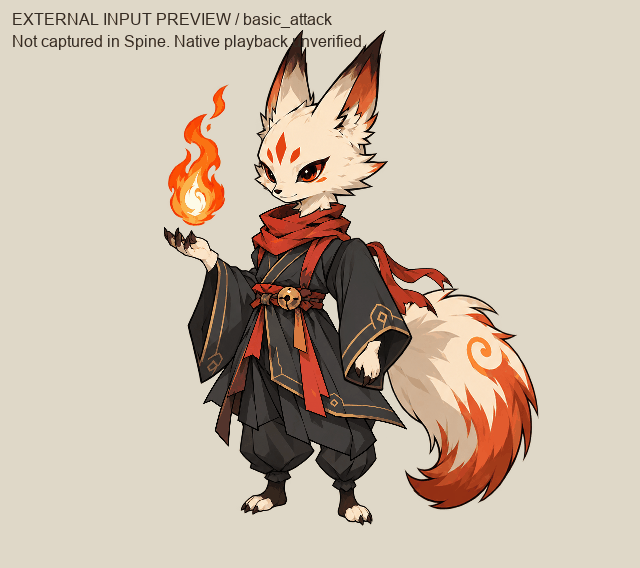
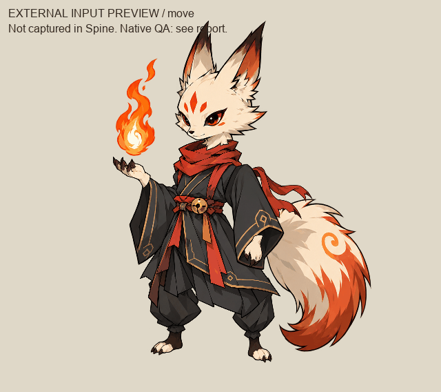
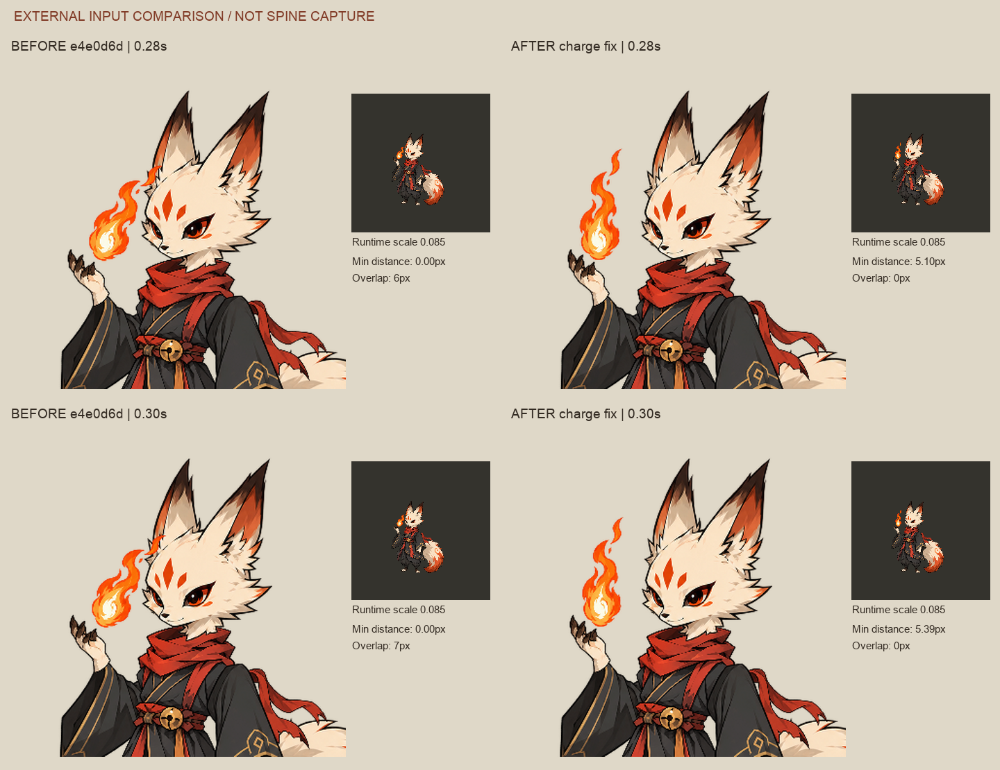
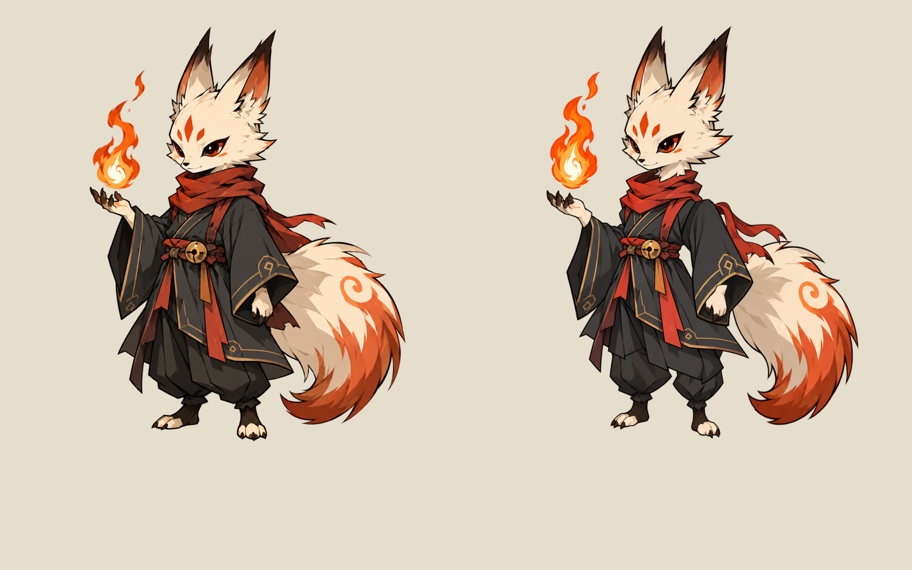
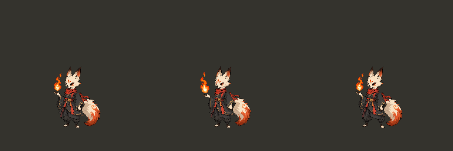

狐火小妖 · 三动作候选
外部输入预览；当前输入已在 Spine 中导入和播放验证。
这些短片由独立检查器读取拆层和动画输入生成，不是 Spine 录屏或 Trial 导出。2026-10-07已修正原生导入尺寸导致的头身错位，并重新验证三个动作。查看修正记录。未保存原生工程，正式视觉验收与运行接入仍待完成。
待机 · 2秒循环
脚固定，身体轻呼吸，尾巴与围巾小幅变化。

狐火普攻 · 1.4秒
蓄力、0.48秒释放、收势；短片重复展示。

移动 · 1秒循环
双腿交替支撑；实际游戏速度与动作切换未验。
此轮保留白狐、赤围巾、暗袍、橙白大尾和橙火。拆层经过生成补画，比例和衣纹仍有差异，等待视觉复核。
已定向修正蓄力火舌贴耳，释放与首尾姿势保持原样；等待05复核。走路膝部刚性和待机转移动脚位差仍未解决。

蓄力定向修正：左为e4e0d6d，右为修稿；均为外部输入预览。近游戏尺寸轮廓已分离。

左：当前游戏来源；右：拆层复组候选。

近游戏尺寸检查 · 从左到右为待机、释放、移动起始姿势。不是游戏截图。
完整交接与重建说明 · 外部编写的4.3输入 · 结构检查结果